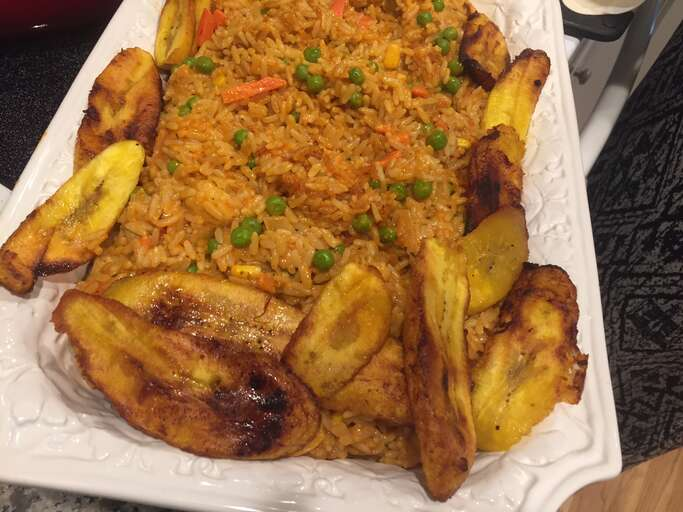

JOLLOF RICE RECIPE

Description
This is most pupolar dish in Nigeria, and it is common in almost every part of the country, it is a thing amisdt us. A quick way to make one
Ingredients
- Rice
- Water
- grounded pepper
- Tomato paste
- Onions
- Curry and thyme flavour
- Maggi
- Ground nut oil
steps
- par boil your rice (determine the amount of rice measurement you want to cook) after par boiling for close to 15mins
- Sieve the rice and put it separate
- Pour your oil in the pot that is already on the fire and put your already sliced onions in it
- add your grouned pepper mixed with tomato paste and also add your curry and time
- Add your maggi and an amount of salt suitable for the mixture
- add enough water to allow the rice rinse well in the mixture add all other materials you like, like green beans and cray fish
- wait for anothere 20 - 25 minutes your jollof rice is ready
Go back